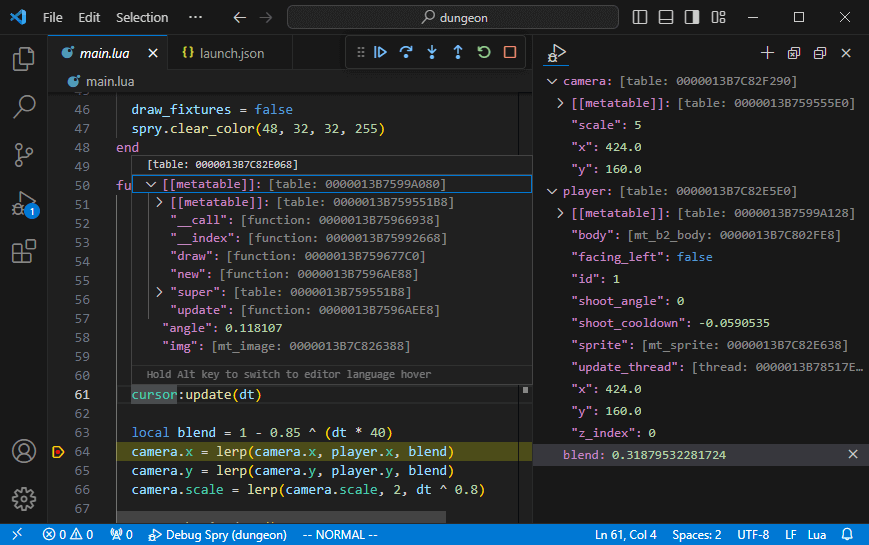
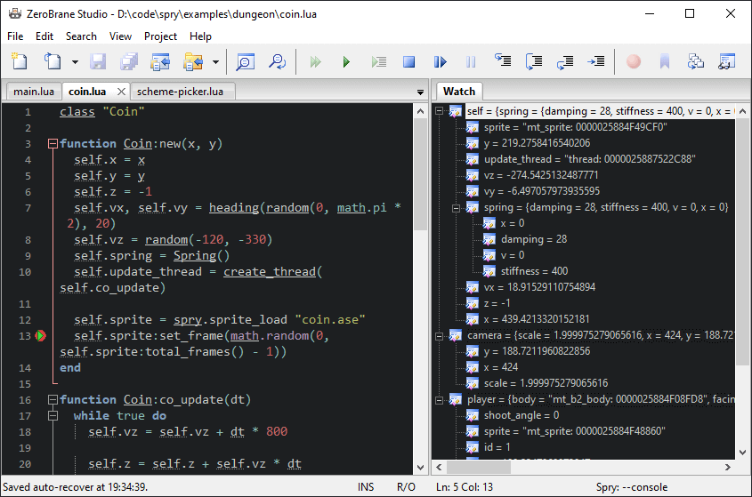

Debugging
Using a debugger with your Spry project allows you to set breakpoints, watch variables, and step through your Lua code.
With VS Code

Install Local Lua Debugger
from the Visual Studio Code Marketplace. Then in the project directory, create
a new .vscode/launch.json file, changing the command to the actual location
of the Spry executable:
{
"version": "0.2.0",
"configurations": [
{
"name": "Debug Spry",
"type": "lua-local",
"request": "launch",
"program": {
"command": "C:\\path\\to\\spry.exe"
},
"args": [ "${workspaceFolder}" ]
}
]
}Add the following to the top of spry.start:
function spry.start()
if os.getenv "LOCAL_LUA_DEBUGGER_VSCODE" == "1" then
unsafe_require("lldebugger").start()
end
-- rest of spry.start...
endWith ZeroBrane Studio

In ZeroBrane's installation directory, find the interpreters directory and
add a new file called spry.lua:
local spry = [[C:\path\to\spry.exe]]
return {
name = "Spry",
description = "Spry framework",
api = {"baselib", ""},
luaversion = "5.4",
frun = function(self, wfilename, rundebug)
local projdir = self:fworkdir(wfilename)
local main = 'main.lua'
if not GetFullPathIfExists(projdir, main) then
local altpath = wfilename:GetPath(wx.wxPATH_GET_VOLUME)
local altname = GetFullPathIfExists(altpath, main)
if altname and wx.wxMessageBox(
("Can't find '%s' file in the current project folder.\n"
.."Would you like to switch the project directory to '%s'?"):format(main, altpath),
"Spry",
wx.wxYES_NO + wx.wxCENTRE, ide:GetMainFrame()) == wx.wxYES then
ide:SetProject(altpath)
ide:ActivateFile(altname)
projdir = altpath
else
ide:Print(("Can't find '%s' file in the current project folder: '%s'.")
:format(main, projdir))
return
end
end
if rundebug then
ide:GetDebugger():SetOptions({runstart = ide.config.debugger.runonstart ~= false})
end
local params = self:GetCommandLineArg()
local cmd = ('"%s" "%s"%s%s'):format(
spry,
projdir,
params and " " .. params or "",
rundebug and ' -mobdebug' or ''
)
return CommandLineRun(cmd, projdir, true, true, nil, nil, nil)
end,
hasdebugger = true,
scratchextloop = true,
takeparameters = true,
}Change the spry variable as needed, then add the following to the top of
spry.start:
function spry.start(arg)
if arg[#arg] == "-mobdebug" then
unsafe_require("mobdebug").start()
end
-- rest of spry.start...
endAdd the arg parameter to spry.start if it isn't there already.
About unsafe_require
Spry has the ability to read game data from a zip archive. The require
function was changed to read files within the mounted directory or archive.
unsafe_require is the require function that you would find in standard
Lua, which has the ability to load files outside of the virtual file system.
The LUA_PATH environment variable is one of things unsafe_require uses as
part of its search. Both Local Lua Debugger and ZeroBrane change LUA_PATH
to make their debug modules visible.